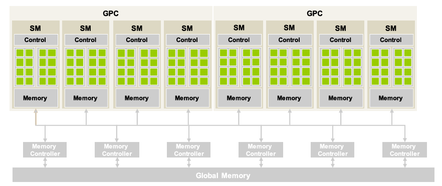
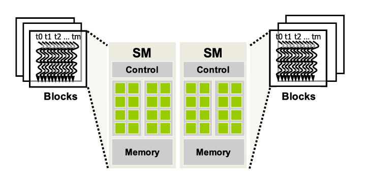
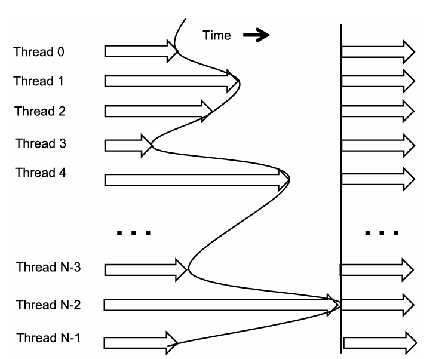
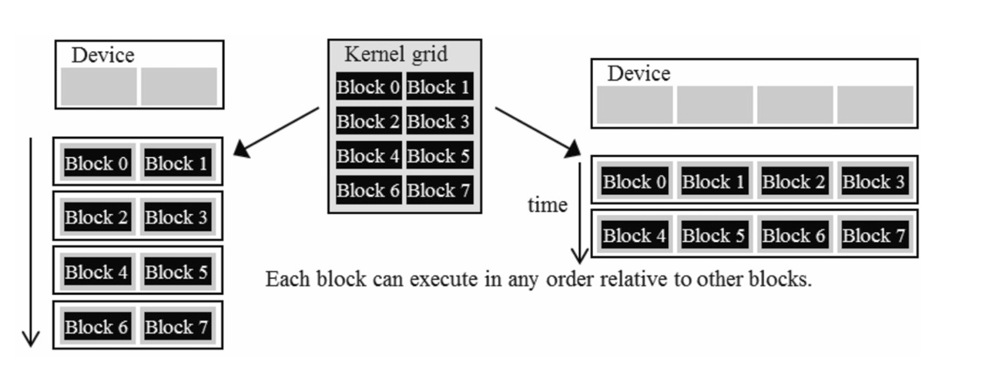
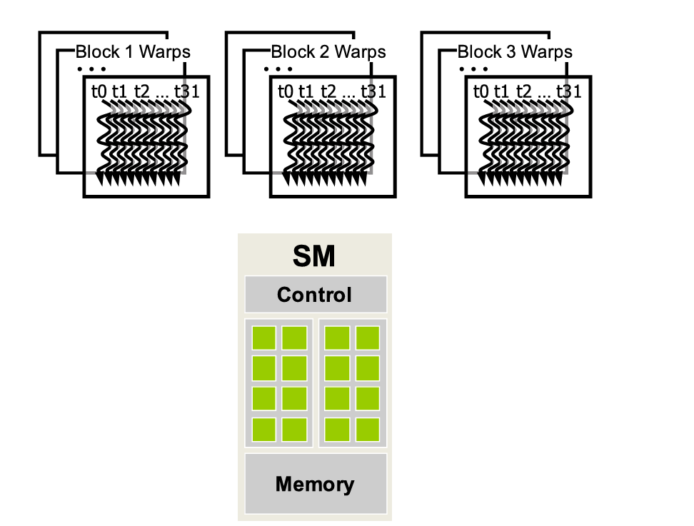
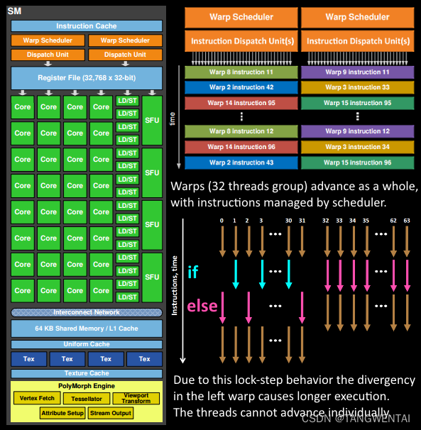
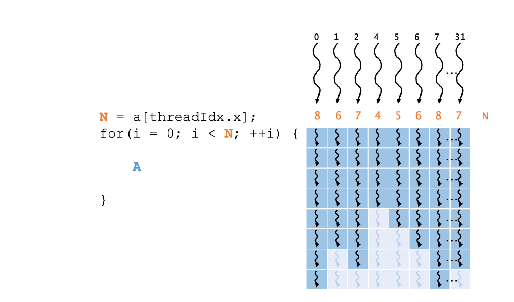
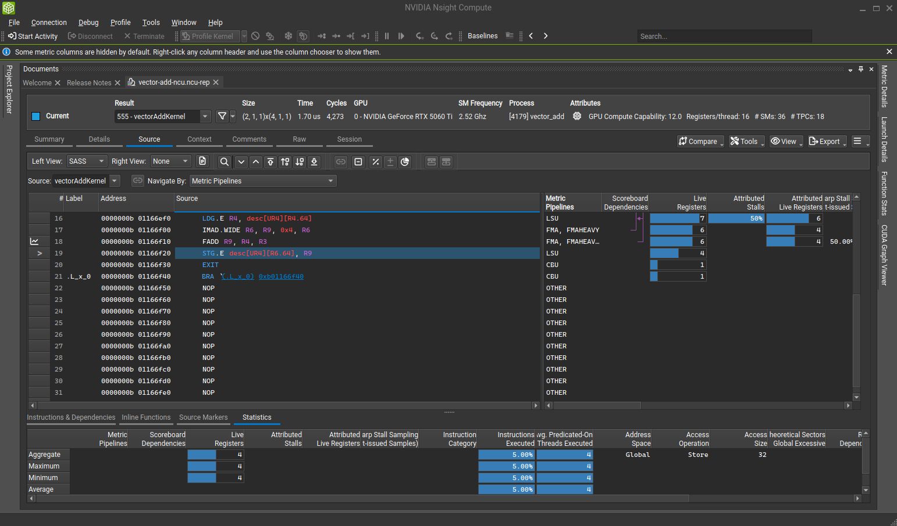
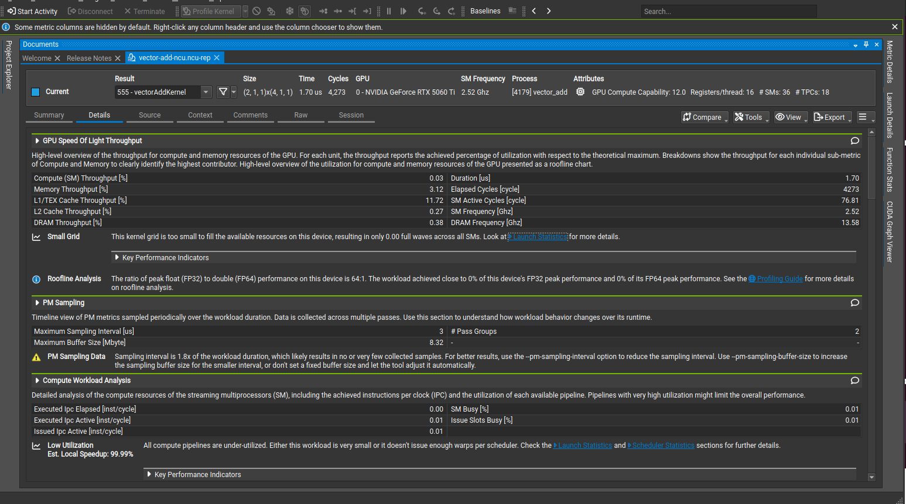
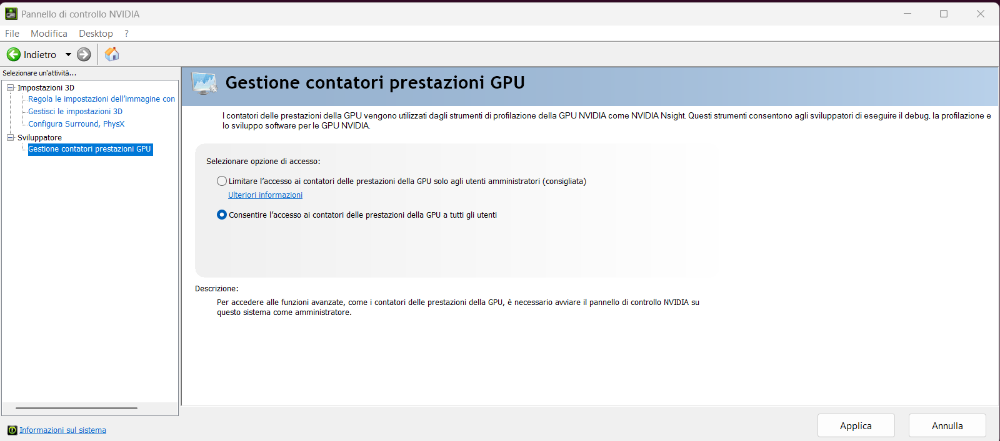

Learning outcomes
Scope
This module preserves the exact topic progression from the architecture portion of the syllabus.
1. Syllabus Topics
1.1 General structure of a modern GPU
A modern GPU is built as a collection of streaming multiprocessors connected to memory and scheduling infrastructure. Its design goal is high aggregate throughput rather than low single-thread latency.
At the top level, recent data-center GPUs group SMs into larger GPU Processing Clusters. Each SM contains control logic, execution lanes, register files, warp schedulers, Tensor Cores, and configurable on-chip memory resources, while the whole chip connects those SMs to off-chip global memory through memory controllers. This organization explains the main CUDA performance tradeoff: useful work must expose enough independent threads to keep many SMs busy, but it must also move data efficiently enough that the memory system does not become the limiting factor.
The exact number of SMs is product-specific, not only architecture-specific. For example, a full GH100 chip contains more SMs than the H100 products sold in SXM or PCIe form factors, and a laptop GPU may expose a much smaller configuration than a data-center GPU from the same broad generation. CUDA code therefore should not hard-code a GPU size. It should launch enough independent blocks and query device properties when a program needs limits such as SM count, shared-memory capacity, register budget, or maximum resident blocks.

1.2 Streaming Multiprocessor, CUDA cores, and resource organization
Each SM contains arithmetic units, register files, shared memory, cache resources, special-function units, Tensor Cores on modern GPUs, and warp scheduling logic. CUDA cores are part of this internal organization, but useful performance reasoning happens at the level of the full SM resource budget rather than at the level of one core.
Terminology note: an SM is not itself a CUDA core. The scalar FP32 execution lanes inside an SM are the units commonly marketed as CUDA cores and are also called streaming processors in architecture discussions. In informal speech people sometimes say "CUDA cores" when they mean the compute resources of the GPU as a whole, but in CUDA architecture reasoning the distinction matters: blocks are assigned to SMs, while warps execute on lanes inside the SM.
The term CUDA core is often used for the scalar FP32 execution lanes inside an SM. In architecture discussions, it is safer to think in terms of streaming processors or execution lanes, because an SM also contains FP64 units, INT32 units, load/store units, Tensor Cores, and shared resources that can become bottlenecks before the FP32 lanes are fully used. Two GPUs with the same nominal number of CUDA cores can behave very differently if they differ in memory bandwidth, L2 cache, shared-memory capacity, Tensor Core generation, clock rates, or supported instructions.
Modern high-end SMs are internally split into multiple processing blocks. A representative Hopper H100 SM has 128 FP32 streaming processors arranged as four processing blocks of 32 lanes each, plus four warp schedulers and four Tensor Cores. Hopper and Blackwell-class compute GPUs also expose large configurable shared-memory/L1 capacity per SM, which is why block size, register use, and shared-memory use directly affect how many warps can reside on each SM.
1.3 Scheduling of thread blocks
When the host launches a kernel, the CUDA runtime creates a grid that may contain far more blocks than the GPU can execute at the same time. The scheduler therefore assigns work to the hardware block by block: a whole thread block is placed on one SM, and the threads in that block begin execution together on that SM.
An SM can host more than one block concurrently, but only while it has enough resources for all resident blocks. Threads, registers, shared memory, scheduling slots, and architectural limits all constrain how many blocks can live on the same SM. Blocks that cannot yet be placed remain pending, then are assigned when earlier resident blocks finish and release their resources.
This block-level scheduling rule is what makes CUDA scalable. A small GPU may run only a few blocks at once, while a larger GPU can run many more blocks from the same grid without changing the kernel code. It is also what makes block-local cooperation possible: because all threads in one block reside on the same SM, they can synchronize with each other and use SM-local shared memory.

1.4 Synchronization among threads of the same block
Threads in the same block can cooperate through shared memory and explicit barriers such as __syncthreads(). This block-local synchronization model is fundamental because it enables reusable local collaboration without requiring arbitrary global synchronization.
A barrier has a scope. The usual scope is the thread block: every thread in the block must reach the same barrier before any thread can continue past it. If a barrier is placed inside a branch, either all threads in the block must execute that barrier or none of them should. Otherwise, some threads may wait forever for peers that can never arrive.
Hopper introduced thread block clusters as an optional larger scope. Blocks in the same cluster are co-scheduled within a GPU Processing Cluster, can use cluster-level synchronization, and can access distributed shared memory formed from the shared memory of participating blocks. Blackwell keeps this hierarchy and extends the performance reasons to use it, especially for kernels that need controlled locality across several SMs.
1.5 Synchronization levels and transparent scalability
A barrier is a synchronization point with a defined scope: every participating thread must arrive before any of them can continue. In CUDA, the scope matters as much as the instruction itself. A barrier that is too broad adds waiting and scheduling constraints; a barrier that is too narrow can let one thread read data before another thread has produced it.
The most common CUDA barrier is the block-wide barrier __syncthreads(). It applies to all threads in the same thread block. When a thread reaches that call, it waits until every thread in the block reaches the same program location. This is why thread block scheduling is tied to synchronization: the runtime places all threads of a block on one SM together, so every thread that participates in the block barrier has the resources needed to eventually arrive.
Barrier locations are distinct. Two __syncthreads() calls in different branches are not the same barrier, even if they look logically paired in source code. If some threads in a block take one branch and other threads take another branch, each group may wait at a different barrier and the block can deadlock or produce undefined behavior. A block-wide barrier must therefore be reached by all threads in the block, or by none of them.
CUDA also exposes narrower and wider synchronization levels. Warp-level synchronization, such as __syncwarp() or Cooperative Groups warp tiles, coordinates threads inside a warp and is useful when the data exchange never leaves that warp. It is lighter than a block-wide barrier but cannot protect communication across different warps. Thread block cluster synchronization is wider than a block: on architectures that support clusters, blocks in the same cluster can coordinate through Cooperative Groups and distributed shared memory. Grid-wide synchronization is wider again and requires cooperative-launch conditions so all participating blocks can be resident and eventually reach the barrier. Across ordinary kernel launches, the kernel boundary itself is a global ordering point: work in a later kernel starts after the earlier kernel has completed in the same stream.
The practical rule is to choose the smallest synchronization scope that matches the data dependence. Use warp-level barriers for warp-local exchange, __syncthreads() for shared memory shared by a block, cluster barriers only when blocks in a cluster intentionally cooperate, and grid-level synchronization only when the whole grid truly needs a phase boundary. Limiting synchronization scope is what lets CUDA keep transparent scalability: blocks that do not synchronize with each other can be scheduled in different orders and in different wave counts on GPUs with different SM counts.

1.6 Transparent scalability of CUDA kernels
Because ordinary thread blocks in a grid are independent, the same kernel can scale across different GPU sizes. A low-cost system with only a few execution resources, such as a small number of SMs, may execute only a small number of blocks at the same time. A higher-end GPU with more SMs can execute many more blocks concurrently without changing the kernel code. Modern high-end GPUs can have hundreds or even thousands of blocks resident across the device at once, depending on the kernel's resource use.
The group of thread blocks executing simultaneously is called a wave. The number of waves is the ratio between the total number of blocks in the grid and the number of blocks that can execute at the same time. In Figure M3.4, the left-hand device executes two blocks at a time, so an eight-block grid runs as four waves. The right-hand device executes four blocks at a time, so the same grid runs as two waves.
A large number of waves is useful when block runtimes are imbalanced, because the scheduler has more opportunities to keep SMs busy as blocks finish at different times. When block runtimes are well balanced, a smaller number of waves can be acceptable and sometimes desirable, for example when later optimization techniques intentionally increase the work done by each thread or block. The key risk with a small number of waves is the final partial wave: if a grid of 660 blocks runs on a GPU that can execute 264 blocks simultaneously, it has 660 / 264 = 2.5 waves. The first two waves use the hardware fully, but the last wave contains only 132 blocks and leaves part of the GPU idle.
This scalability depends on the absence of synchronization constraints between ordinary thread blocks in the same grid. If block 0 had to wait for block 1 inside the same kernel launch, the runtime would need a global ordering guarantee and could not freely map blocks onto small or large GPUs. By keeping blocks independent, CUDA lets the same grid run in more waves on a smaller device and in fewer waves on a larger one.

1.7 Warps and the SIMD or SIMT model
Although CUDA threads are written individually in source code, the SM does not normally schedule them one by one. Once a block is assigned to an SM, the hardware partitions the block into warps. On current CUDA GPUs, a warp contains 32 consecutive threads and is the basic unit of thread scheduling inside the SM.
The reason for grouping threads into warps is architectural. In the von Neumann model, a control unit keeps a program counter, fetches the next instruction, decodes it, and dispatches control signals to the processing hardware. Fetch and dispatch logic is complex and expensive. A GPU reduces that cost by letting many processing lanes share the same control path: one instruction is fetched for a warp, then multiple lanes execute that instruction at the same time.
Each lane still works on a different thread's data. For example, the shared instruction may be an add, but each lane reads different register values for its own thread and writes a different result. This is the SIMD idea: Single Instruction, Multiple Data. CUDA exposes it as SIMT: Single Instruction, Multiple Thread. The programmer writes scalar code for each thread, while the hardware groups those threads into a warp and runs them on SIMD-style execution resources.
For a one-dimensional block, warp membership follows increasing threadIdx.x. Threads 0 through 31 form warp 0, threads 32 through 63 form warp 1, and in general warp n contains threads 32 * n through 32 * (n + 1) - 1. A 256-thread block therefore contains 8 warps. If the block size is not a multiple of 32, the last warp still occupies a full warp slot and the unused lanes are inactive; for example, a 48-thread block creates two warps, with 16 inactive lanes in the second warp.
For multidimensional blocks, CUDA first linearizes the thread indices and then partitions that linear order into warps. The x dimension varies fastest, then y, then z. This matters for performance because neighboring thread indices often become neighboring lanes in the same warp, which affects memory coalescing, divergence, and warp-level cooperation.

t0 through t31. The SM can then share fetch and dispatch hardware across the lanes that execute one warp instruction.This design is efficient when all active threads in the warp follow the same instruction path, because the shared control hardware is doing useful work for many lanes at once. If threads in the same warp diverge into different branches, the hardware must take multiple passes with different lanes active in each pass. CUDA preserves the programming illusion that each thread has its own control flow, but the SIMD-style hardware makes divergent paths more expensive.
1.8 Control-flow divergence
Control-flow divergence happens when threads in the same warp need to follow different execution paths. The usual example is an if/else: some lanes in the warp satisfy the condition, while other lanes do not. Since the warp shares instruction fetch and dispatch hardware, the SM cannot issue two different instructions for different lanes at the exact same time as if they were fully independent processors.
The hardware preserves CUDA's thread semantics by executing the divergent paths in multiple passes. During the pass for the if path, only the lanes whose threads took that path are active; the other lanes are masked off. During the pass for the else path, the opposite lanes are active. After the divergent region, the warp may reconverge and continue with common code. This makes the program correct, but it consumes extra instruction passes and leaves part of the SIMD-style execution hardware inactive during each pass.

if path and others take the else path, the hardware executes multiple masked passes instead of letting every thread advance independently.Divergence is detected by looking at the condition that controls the branch or loop. If the condition depends on threadIdx, a computed global index, or data values that differ across lanes, threads in one warp may take different paths. Boundary checks such as if (i < n) are a common and often necessary source of divergence: they prevent out-of-range memory access when the data size is not an exact multiple of the block size. Their cost is usually small for large arrays because only the last few warps near the boundary diverge.
On older architectures, divergent paths were typically executed sequentially. On Volta and newer architectures, independent thread scheduling can interleave progress from different paths more flexibly, but this does not remove the need for explicit synchronization. If threads in a warp must all finish a phase before any of them use the results, use a warp-level primitive such as __syncwarp().

__syncwarp() may be required.1.9 Warp scheduling and latency tolerance
An SM usually has many more resident threads than it can execute at the same instant. The execution lanes can issue work only for a subset of the resident warps, while the remaining warps wait in the SM with their execution state already allocated. This is intentional: the extra resident warps are the pool the hardware uses to tolerate long-latency operations.
When a warp reaches an instruction that depends on a long-latency result, such as a global-memory load, a pipeline result, or a branch outcome, that warp is not selected for execution until it becomes ready again. The warp scheduler instead chooses another ready warp: a warp whose next instruction does not depend on an unfinished earlier operation. This fine-grained switching between ready warps lets the SM spend cycles executing useful instructions from one warp while another warp is waiting. The waiting time is not removed, but it is hidden behind useful work from other warps; this is why the idea is called latency tolerance or latency hiding.
This is different from ordinary CPU context switching. On a CPU, switching from one software thread to another may require saving the outgoing thread's program counter, registers, and other execution state to memory, then loading the incoming thread's state. That save-and-restore work costs time and can leave execution resources idle. On a GPU SM, the resident warps already have their program counters, registers, and scheduling state held in hardware resources. Switching from a stalled warp to a ready warp therefore does not require copying the stalled warp's registers out to memory and loading another warp's registers back in. This is often described as zero-overhead warp scheduling: the scheduler can pick a different ready warp without adding the kind of context-switch overhead associated with CPU time-sharing.
For latency hiding to work well, the SM needs enough resident warps to make it likely that at least one warp is ready whenever another warp stalls. This is why occupancy matters: more resident warps can improve the scheduler's ability to cover memory and pipeline latency. Occupancy is not the final performance goal by itself, but too few resident warps can leave the SM with no ready work and expose the raw latency of global memory or other long operations.
1.10 Occupancy and resource partitioning
Occupancy is the ratio between the number of resident warps assigned to an SM and the maximum number of resident warps that SM can support. It matters because resident warps are the scheduler's pool for hiding latency: when one warp stalls on memory or another long operation, another ready warp can be selected. Occupancy is therefore a capacity measure for latency tolerance, not a direct measurement of useful work completed.
The key idea is resource partitioning. An SM has several limited resources that must be divided among resident thread blocks: thread slots, warp slots, block slots, registers, shared memory, and scheduling resources. The partition is dynamic, so the same SM can host a few large blocks or many smaller blocks. This flexibility is useful, but it also means that the first exhausted resource determines how many blocks and warps can actually reside on the SM.
Consider a Hopper H100-class SM with 2048 resident-thread slots, 64 resident-warp slots, and 32 resident-block slots. Blocks of 1024, 512, 256, 128, or 64 threads can all fill the 2048 thread slots exactly: they produce 2, 4, 8, 16, or 32 resident blocks per SM. A 32-thread block is different. Filling 2048 thread slots would require 64 blocks, but the SM has only 32 block slots, so only 32 blocks can reside at once. That gives 1024 resident threads out of 2048 possible threads, or 50% occupancy, even though each block is valid.
Block size can also waste thread capacity when it does not divide the SM thread capacity cleanly. With 768-thread blocks on the same 2048-thread SM, only two blocks can fit because three blocks would require 2304 threads. The SM therefore hosts 1536 resident threads and leaves 512 thread slots unused. In this case the block-slot limit is not reached and the thread-slot limit is not reached, but the kernel still reaches only 1536 / 2048 = 75% occupancy because blocks are allocated as whole units.
Registers create another common occupancy limit. If an SM has 65,536 32-bit registers, full occupancy with 2048 resident threads allows at most 32 registers per thread. A kernel that needs 64 registers per thread can support only about 1024 resident threads from that register budget, so its occupancy is capped near 50% regardless of block size. Even small changes can matter: a 512-thread block using 31 registers per thread allows four resident blocks, or 2048 resident threads, because 2048 x 31 = 63,488 registers. If the compiler allocates 33 registers per thread, four blocks would require 67,584 registers, so the SM may drop to three resident blocks, or 1536 threads. That small register increase reduces occupancy from 100% to 75%.
Trying to force higher occupancy is not always profitable. The compiler may spill register values to memory to lower register pressure, but spilled values are slower to access and can increase total runtime. Shared memory has the same kind of tradeoff: using more shared memory per block can reduce occupancy, but it may also reduce expensive global-memory traffic enough to make the kernel faster. Treat occupancy as a diagnostic constraint: use Nsight Compute's Occupancy section or CUDA occupancy API calls to identify the limiting resource, then compare occupancy with memory throughput, instruction throughput, register spilling, and total kernel time.
2. NVIDIA GPU Architecture Families
2.1 Why architecture families matter
NVIDIA uses architecture family names for broad design generations. Examples include Fermi, Kepler, Maxwell, Pascal, Volta, Turing, Ampere, Ada Lovelace, Hopper, and Blackwell. These names matter because they signal major changes in the SM, memory hierarchy, interconnect, Tensor Core support, scheduling behavior, and CUDA compute capability.
A family name does not uniquely determine the size of the GPU. The same family can appear as a small laptop GPU, a workstation GPU, or a data-center accelerator. Product configuration determines the final SM count, memory capacity, memory bandwidth, cache size, clock limits, and enabled features. For CUDA programmers, the architecture family tells you what kinds of features may exist; the actual device properties tell you what the current program can use.
| Family | Typical compute role | Key architectural change |
|---|---|---|
| Fermi | Early CUDA general-purpose compute | More complete GPU compute model with stronger caching and double-precision support. |
| Kepler | Throughput scaling | Large SMX design with many lanes per multiprocessor and strong energy-efficiency gains. |
| Maxwell | Efficiency and scheduling | Smaller SMM partitions, better performance per watt, and more balanced resource use. |
| Pascal | HPC and deep learning transition | HBM2 on P100-class devices, NVLink, and stronger FP16 support for neural networks. |
| Volta | Modern AI/HPC base | Tensor Cores and independent thread scheduling changed how warp-level correctness and matrix math are handled. |
| Turing | Inference and graphics/workstation | Added RT Cores and improved Tensor Cores; important for inference and rendering workloads. |
| Ampere | Large-scale AI/HPC | TF32 Tensor Core path, third-generation Tensor Cores, larger configurable L1/shared memory, and MIG on A100-class devices. |
| Ada Lovelace | Workstation and graphics-heavy AI | Very high FP32 lane counts in graphics/workstation products, fourth-generation Tensor Cores, and strong RT capability. |
| Hopper | Data-center AI/HPC | Thread block clusters, distributed shared memory, Tensor Memory Accelerator, FP8 Tensor Cores, and larger SM-local memory. |
| Blackwell | AI factories and next-generation data centers | Dual-die unified GPU packaging, fifth-generation Tensor Cores, FP4-oriented transformer acceleration, larger HBM3E systems, and Hopper-style clusters with expanded memory features. |
2.2 Representative model comparison
The following table uses representative GPUs to make the scale changes concrete. The values are useful for architectural intuition, but they should not be used as universal constants for a family. Always check the actual target device when writing performance-sensitive code.
| Representative GPU | Family | SMs | Streaming processors per SM | Total FP32 lanes | Architectural notes |
|---|---|---|---|---|---|
| Tesla C2050 | Fermi | 14 | 32 | 448 | Early CUDA compute accelerator with stronger cache and FP64-oriented data-center positioning. |
| Tesla K20X | Kepler | 14 | 192 | 2688 | Large SMX design: many lanes per multiprocessor, strong throughput, but less fine-grained SM partitioning than later generations. |
| Tesla M40 | Maxwell | 24 | 128 | 3072 | SMM design split resources into smaller scheduling partitions for better utilization and efficiency. |
| Tesla P100 | Pascal | 56 | 64 | 3584 | HBM2 and NVLink made data-center scaling and memory bandwidth central design features. |
| Tesla V100 | Volta | 80 | 64 | 5120 | Introduced Tensor Cores and independent thread scheduling, so warp-level assumptions became more explicit. |
| NVIDIA T4 | Turing | 40 | 64 | 2560 | Inference-oriented GPU with Tensor Cores plus RT hardware inherited from the graphics side. |
| A100 SXM | Ampere | 108 | 64 | 6912 | Third-generation Tensor Cores, TF32, MIG, high HBM bandwidth, and up to 164 KB shared memory per block on compute capability 8.0 devices. |
| RTX 4090 | Ada Lovelace | 128 | 128 | 16384 | Massive FP32 graphics/workstation configuration with fourth-generation Tensor Cores and strong ray-tracing hardware; not a data-center FP64 design. |
| H100 SXM5 | Hopper | 132 | 128 | 16896 | Fourth-generation Tensor Cores, FP8, 528 Tensor Cores total, 50 MB L2, HBM3, thread block clusters, distributed shared memory, and TMA. |
| B200-class GPU | Blackwell | Product-specific | 128 | Query device | Compute capability 10.0 SMs contain 128 FP32 cores, 64 FP64 cores, 64 INT32 cores, four fifth-generation Tensor Cores, four warp schedulers, and 256 KB unified data cache/shared memory. B200 supports up to 180 GB HBM3/HBM3E. |
2.3 Hopper versus Blackwell in CUDA terms
Hopper and Blackwell are the two most important recent data-center families for this course because both expose the modern hierarchy described earlier: grids, thread block clusters, blocks, warps, and threads. Hopper made clusters, distributed shared memory, and TMA part of the CUDA performance vocabulary. Blackwell keeps that model and extends the specialized matrix path, memory system, and scale-out story for larger AI workloads.
At SM level, Hopper compute capability 9.0 and Blackwell compute capability 10.0 are similar in the quantities that shape first-order occupancy reasoning: both use 32-thread warps, support up to 64 concurrent warps per SM, use 64K 32-bit registers per SM, and allow up to 32 resident blocks per SM. Both can expose a 256 KB unified data cache/shared-memory resource per SM, with large dynamic shared-memory allocations requiring explicit opt-in above the portable static limit.
The major Blackwell difference is not that CUDA programmers suddenly launch kernels differently. The difference is that the product is built for larger matrix-heavy AI systems: two reticle-limited dies connected as a unified GPU, fifth-generation Tensor Cores, FP4-oriented transformer acceleration, fifth-generation NVLink, and much larger system-level HBM3E configurations. For hand-written CUDA kernels, the practical lesson is still the same: measure the actual GPU, query its limits, and reason from SM resources, resident warps, memory movement, and synchronization scope.
2.4 Querying device properties
Portable CUDA programs query device properties instead of assuming a particular GPU model. The runtime reports values such as compute capability, SM count, maximum threads per block, maximum threads per SM, register limits, shared-memory limits, warp size, memory size, and memory bandwidth-related properties. Those values are the bridge between architecture theory and a launch configuration that fits the current device.
cudaDeviceProp prop{};
cudaGetDeviceProperties(&prop, 0);
printf("name: %s\n", prop.name);
printf("compute capability: %d.%d\n", prop.major, prop.minor);
printf("SM count: %d\n", prop.multiProcessorCount);
printf("warp size: %d\n", prop.warpSize);
printf("max threads per SM: %d\n", prop.maxThreadsPerMultiProcessor);
printf("shared memory per block: %zu\n", prop.sharedMemPerBlock);The runnable version of this query is available in examples/ch03/device_properties.
This information does not replace profiling, but it prevents a common mistake: tuning a kernel for one GPU and accidentally treating that one product as if it represented the entire NVIDIA architecture family.
2.5 Profiling and monitoring tools
Device properties describe what the GPU can do in principle. Profiling tools show what a specific program actually does at runtime. Use lightweight monitoring first to confirm that the GPU is active, then use timeline profiling to understand CPU-GPU execution order, then use kernel profiling to inspect SM, warp, memory, and occupancy behavior.
nvidia-smi is the quickest status tool because it comes with the NVIDIA driver. It reports visible GPUs, driver and CUDA runtime compatibility, memory use, utilization, power, temperature, and active processes. It does not explain why a kernel is fast or slow, but it is the first sanity check before profiling.
nvidia-smi
watch -n 1 nvidia-smi
nvidia-smi pmon -i 0
nvidia-smi dmon -i 0nvtop is a terminal UI similar to htop for GPUs. It is useful during labs because it gives a live view of utilization, memory, temperature, and processes without writing a profiling report.
sudo apt install nvtop
nvtopNsight Systems is the right tool for the whole-program timeline. It shows when the CPU launches kernels, when CUDA memory copies occur, which streams are active, where synchronization happens, and whether data movement overlaps with GPU work. Start with it when the question is "where does the program spend time?"
nsys profile --stats=true ./program
nsys profile --stats=true -o run-report ./program
nsys-ui run-report.nsys-repThe following output is a real Nsight Systems summary from examples/ch02/vector_add. The important sections are cuda_api_sum, which shows runtime API calls such as cudaMalloc, cudaMemcpy, and cudaLaunchKernel; cuda_gpu_kern_sum, which shows the CUDA kernel that ran on the GPU; and the memory summaries, which show host-to-device and device-to-host copies.
thimoty@EINSTEIN:~/git/cuda-course/examples/ch02/vector_add$ nsys profile --stats=true ./vector_add
Collecting data...
0 + 0 = 0
1 + 2 = 3
2 + 4 = 6
3 + 6 = 9
4 + 8 = 12
5 + 10 = 15
6 + 12 = 18
7 + 14 = 21
Generating '/tmp/nsys-report-6d93.qdstrm'
[1/8] [========================100%] report1.nsys-rep
[2/8] [========================100%] report1.sqlite
[5/8] Executing 'cuda_api_sum' stats report
Time (%) Total Time (ns) Num Calls Avg (ns) Med (ns) Min (ns) Max (ns) StdDev (ns) Name
-------- --------------- --------- ---------- --------- -------- --------- ----------- ----------------------
98.8 153189134 3 51063044.7 7291.0 1545 153180298 88436135.6 cudaMalloc
0.9 1349990 1 1349990.0 1349990.0 1349990 1349990 0.0 cudaLaunchKernel
0.2 373835 3 124611.7 56802.0 35645 281388 136183.8 cudaMemcpy
0.1 163407 3 54469.0 5559.0 1972 155876 87839.3 cudaFree
0.0 6083 1 6083.0 6083.0 6083 6083 0.0 cudaDeviceSynchronize
[6/8] Executing 'cuda_gpu_kern_sum' stats report
Time (%) Total Time (ns) Instances Avg (ns) Med (ns) Min (ns) Max (ns) StdDev (ns) Name
-------- --------------- --------- -------- -------- -------- -------- ----------- -----------------------------------------------
100.0 918 1 918.0 918.0 918 918 0.0 vectorAddKernel(float *, float *, float *, int)
[7/8] Executing 'cuda_gpu_mem_time_sum' stats report
Time (%) Total Time (ns) Count Avg (ns) Med (ns) Min (ns) Max (ns) StdDev (ns) Operation
-------- --------------- ----- -------- -------- -------- -------- ----------- ----------------------------
51.0 820 2 410.0 410.0 262 558 209.3 [CUDA memcpy Host-to-Device]
49.0 787 1 787.0 787.0 787 787 0.0 [CUDA memcpy Device-to-Host]
[8/8] Executing 'cuda_gpu_mem_size_sum' stats report
Total (MB) Count Avg (MB) Med (MB) Min (MB) Max (MB) StdDev (MB) Operation
---------- ----- -------- -------- -------- -------- ----------- ----------------------------
0.000 2 0.000 0.000 0.000 0.000 0.000 [CUDA memcpy Host-to-Device]
0.000 1 0.000 0.000 0.000 0.000 0.000 [CUDA memcpy Device-to-Host]
Generated:
/home/thimoty/git/cuda-course/examples/ch02/vector_add/report1.nsys-rep
/home/thimoty/git/cuda-course/examples/ch02/vector_add/report1.sqliteThe Time (%) column shows how the measured time inside one report section is distributed. In cuda_api_sum, most time is spent in cudaMalloc, which is common in tiny examples because the first CUDA runtime calls include context setup and allocation overhead. This does not mean allocation is the useful computation; it means setup dominates a very small workload.
Total Time (ns), Num Calls, Avg, Med, Min, and Max describe how often an API call or GPU operation occurred and how long it took. For example, there are three cudaMemcpy calls: two host-to-device copies for the input vectors and one device-to-host copy for the output vector. The cudaLaunchKernel row measures CPU-side launch overhead, not the kernel's GPU execution time.
The cuda_gpu_kern_sum section is the GPU-side kernel summary. Here there is one instance of vectorAddKernel, and it takes less than a microsecond because the vector has only eight elements. For such a small problem, profiler overhead and launch overhead are much larger than the actual computation, so the output is useful for learning the workflow rather than for drawing performance conclusions.
The memory sections separate time from size. cuda_gpu_mem_time_sum reports how long the GPU-visible copy operations took, while cuda_gpu_mem_size_sum reports how much data moved. The size prints as 0.000 MB because the example copies only a few floats, far below the displayed megabyte precision. In larger examples, these rows help identify whether host-device transfers dominate the runtime.
Nsight Compute is the right tool for a single CUDA kernel. It reports occupancy, achieved SM utilization, active warps, instruction throughput, memory throughput, shared-memory behavior, branch divergence, register pressure, and stall reasons. Use it after Nsight Systems has identified the kernel worth studying.
ncu ./program
ncu --set full -o kernel-report ./program
ncu-ui kernel-report.ncu-repTo create a report from the course vector_add example and open it in the graphical Nsight Compute UI from WSL, use the report file workflow:
cd ~/git/cuda-course/examples/ch02/vector_add
nvcc vector_add.cu -o vector_add
ncu --set full --force-overwrite -o vector-add-ncu ./vector_add
ncu-ui vector-add-ncu.ncu-repIn WSL, ncu-ui may appear as a Windows desktop window through WSLg. That is expected: the profiler and target program run from the Linux environment, while the graphical interface is displayed by Windows integration.

vector_add report loaded. The GUI makes it easier to inspect source, SASS, launch attributes, and metric tables than the terminal report alone.In the source view, SASS means the final NVIDIA GPU machine assembly generated for the selected kernel. CUDA C++ is first compiled through intermediate representations such as PTX, but SASS is the architecture-specific instruction stream that actually runs on the SMs. In this report, instructions such as LDG.E, FADD, and STG.E correspond to loading values from global memory, adding floating-point values, and storing the result. This view is useful because Nsight Compute can attach metrics such as stalls, dependencies, live registers, and memory behavior to the actual instructions executed by the GPU.

The Details tab is the best first stop when reading an Nsight Compute report in the UI. Start from GPU Speed Of Light Throughput to see whether compute or memory resources are being used, then follow profiler links such as Launch Statistics when the report explains why utilization is low. Sections such as Compute Workload Analysis, PM Sampling, and the right-side metric panes help connect the high-level warning to concrete counters, but for this tiny kernel the main message remains that the grid is too small.
The current vector_add program is intentionally tiny, so its Nsight Compute charts are useful for learning the UI but not very interesting as a performance study. A later lab should add a larger CUDA workload that runs long enough and launches enough threads to produce more meaningful occupancy, throughput, memory, and stall charts.
The following output is a real Nsight Compute report from the same examples/ch02/vector_add program.
ncu ./vector_add
==PROF== Connected to process 2871 (/home/thimoty/git/cuda-course/examples/ch02/vector_add/vector_add)
==PROF== Profiling "vectorAddKernel" - 0: 0%....50%....100% - 9 passes
0 + 0 = 0
1 + 2 = 3
2 + 4 = 6
3 + 6 = 9
4 + 8 = 12
5 + 10 = 15
6 + 12 = 18
7 + 14 = 21
==PROF== Disconnected from process 2871
[2871] vector_add@127.0.0.1
vectorAddKernel(float *, float *, float *, int) (2, 1, 1)x(4, 1, 1), Context 1, Stream 7, Device 0, CC 12.0
Section: GPU Speed Of Light Throughput
----------------------- ----------- ------------
Metric Name Metric Unit Metric Value
----------------------- ----------- ------------
DRAM Frequency Ghz 13.19
SM Frequency Ghz 2.52
Elapsed Cycles cycle 4351
Memory Throughput % 3.51
DRAM Throughput % 0.35
Duration us 1.73
L1/TEX Cache Throughput % 11.44
L2 Cache Throughput % 0.45
SM Active Cycles cycle 78.64
Compute (SM) Throughput % 0.03
----------------------- ----------- ------------
OPT This kernel grid is too small to fill the available resources on this device, resulting in only 0.00 full
waves across all SMs. Look at Launch Statistics for more details.
Section: Launch Statistics
-------------------------------- --------------- ---------------
Metric Name Metric Unit Metric Value
-------------------------------- --------------- ---------------
Block Size 4
Cluster Scheduling Policy PolicySpread
Cluster Size 0
Function Cache Configuration CachePreferNone
Grid Size 2
Preferred Cluster Size 0
Registers Per Thread register/thread 16
Shared Memory Configuration Size Kbyte 32.77
Driver Shared Memory Per Block Kbyte/block 1.02
Dynamic Shared Memory Per Block byte/block 0
Static Shared Memory Per Block byte/block 0
# SMs SM 36
Stack Size 1024
Threads thread 8
# TPCs 18
Enabled TPC IDs all
Uses Green Context 0
Waves Per SM 0.00
-------------------------------- --------------- ---------------
OPT Est. Speedup: 87.5%
Threads are executed in groups of 32 threads called warps. This kernel launch is configured to execute 4
threads per block. Consequently, some threads in a warp are masked off and those hardware resources are
unused. Try changing the number of threads per block to be a multiple of 32 threads. Between 128 and 256
threads per block is a good initial range for experimentation. Use smaller thread blocks rather than one
large thread block per multiprocessor if latency affects performance. This is particularly beneficial to
kernels that frequently call __syncthreads(). See the Hardware Model
(https://docs.nvidia.com/nsight-compute/ProfilingGuide/index.html#metrics-hw-model) description for more
details on launch configurations.
----- --------------------------------------------------------------------------------------------------------------
OPT Est. Speedup: 94.44%
The grid for this launch is configured to execute only 2 blocks, which is less than the 36 multiprocessors
used. This can underutilize some multiprocessors. If you do not intend to execute this kernel concurrently
with other workloads, consider reducing the block size to have at least one block per multiprocessor or
increase the size of the grid to fully utilize the available hardware resources. See the Hardware Model
(https://docs.nvidia.com/nsight-compute/ProfilingGuide/index.html#metrics-hw-model) description for more
details on launch configurations.
Section: Occupancy
------------------------------- ----------- ------------
Metric Name Metric Unit Metric Value
------------------------------- ----------- ------------
Max Active Clusters cluster 0
Max Cluster Size block 8
Overall GPU Occupancy % 0
Cluster Occupancy % 0
Block Limit Barriers block 24
Block Limit SM block 24
Block Limit Registers block 128
Block Limit Shared Mem block 32
Block Limit Warps block 48
Theoretical Active Warps per SM warp 24
Theoretical Occupancy % 50
Achieved Occupancy % 2.08
Achieved Active Warps Per SM warp 1
------------------------------- ----------- ------------
OPT Est. Local Speedup: 95.83%
The difference between calculated theoretical (50.0%) and measured achieved occupancy (2.1%) can be the
result of warp scheduling overheads or workload imbalances during the kernel execution. Load imbalances can
occur between warps within a block as well as across blocks of the same kernel. See the CUDA Best Practices
Guide (https://docs.nvidia.com/cuda/cuda-c-best-practices-guide/index.html#occupancy) for more details on
optimizing occupancy.
----- --------------------------------------------------------------------------------------------------------------
OPT Est. Local Speedup: 50%
The 6.00 theoretical warps per scheduler this kernel can issue according to its occupancy are below the
hardware maximum of 12. This kernel's theoretical occupancy (50.0%) is limited by the number of blocks that
can fit on the SM.
Section: GPU and Memory Workload Distribution
-------------------------- ----------- ------------
Metric Name Metric Unit Metric Value
-------------------------- ----------- ------------
Average DRAM Active Cycles cycle 80
Total DRAM Elapsed Cycles cycle 91136
Average L1 Active Cycles cycle 78.64
Total L1 Elapsed Cycles cycle 156564
Average L2 Active Cycles cycle 324.44
Total L2 Elapsed Cycles cycle 62336
Average SM Active Cycles cycle 78.64
Total SM Elapsed Cycles cycle 156564
Average SMSP Active Cycles cycle 19.41
Total SMSP Elapsed Cycles cycle 626256
-------------------------- ----------- ------------The kernel line gives the launch shape: (2, 1, 1)x(4, 1, 1) means a grid of 2 blocks with 4 threads per block, for only 8 CUDA threads in total. It also reports the target device as compute capability 12.0. This is a valid launch for demonstrating correctness, but it is intentionally far too small to use the GPU efficiently.
The GPU Speed Of Light Throughput section compares the measured work with the device's peak throughput. The duration is only 1.73 microseconds, while compute throughput is 0.03%, DRAM throughput is 0.35%, and memory throughput is 3.51%. These very low percentages do not mean the addition instruction is inefficient; they mean the workload is too small for the hardware to reach steady-state execution.
Launch Statistics explains the main reason. The report sees 36 SMs, but the launch creates only 2 blocks and each block contains only 4 threads. Since a warp has 32 threads, most lanes in each warp are masked off, and since there are fewer blocks than SMs, most SMs receive no block at all. The Waves Per SM value of 0.00 is the profiler's compact way of saying that the grid cannot even form one full wave across the device.
The Occupancy section separates theoretical capacity from measured use. With this block shape, the theoretical occupancy is 50%, but the achieved occupancy is only 2.08% with about 1 active warp per SM. The gap is expected for a tiny example: occupancy formulas describe how many warps could reside on an SM if enough blocks existed, while achieved occupancy reflects what actually ran during this launch.
The OPT messages are profiler guidance, not automatic proof of a bad algorithm. Here they correctly identify two teaching points: choose a block size that is a multiple of 32, usually starting around 128 or 256 threads per block, and launch enough blocks to give the SMs work. For the eight-element vector used in this introductory example, the right conclusion is not to over-optimize the toy problem; it is to understand what the profiler is warning about before moving to larger inputs.
If ncu reports ERR_NVGPUCTRPERM, the tool can see the program but the current user is not allowed to read NVIDIA GPU performance counters. On Windows with WSL, enable access from the NVIDIA Control Panel: activate developer settings, open the GPU performance counter management page, and allow counter access for all users. Then restart WSL and run ncu again.

A practical workflow is: run nvidia-smi or nvtop while the program executes, capture a timeline with nsys, then profile one important kernel with ncu. This sequence separates three different questions: is the GPU being used, when is it being used, and how efficiently are its SMs, warps, and memory system being used?
3. Guided Exercises
3.1 Architecture reasoning
- For a 256-thread block, calculate the number of warps.
- Explain what happens when a block size is not a multiple of the warp size.
- Describe one case where high occupancy may still not produce the best runtime.
- Compare H100 SXM5 and Blackwell compute capability 10.0 at SM level: which limits are similar, and which features changed?
3.2 Divergence and scheduling exercise
- Write a simple branch inside a kernel and explain why divergence is measured per warp.
- State how warp scheduling helps tolerate memory latency when many warps are resident.
- Explain why independent thread scheduling makes explicit warp synchronization important when threads in a warp must complete a phase together.
3.3 Device property exercise
- Open and compile the runnable example
examples/ch03/device_properties. - Run the program that calls
cudaGetDeviceProperties()on the lab machine. - Record the GPU name, compute capability, SM count, warp size, maximum threads per SM, and shared-memory limit.
- Estimate how many 256-thread blocks could fit on one SM if only the thread limit mattered, then explain which other resources may reduce that number.